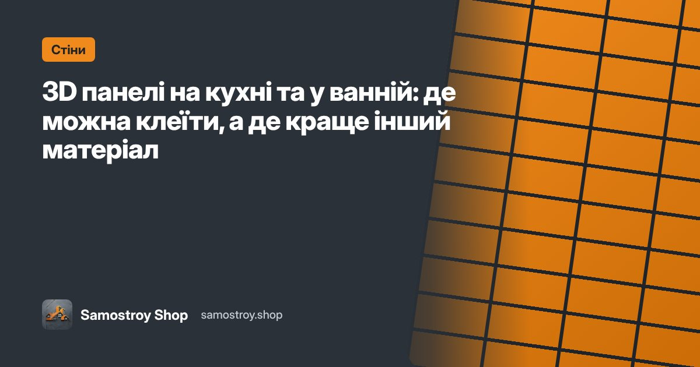
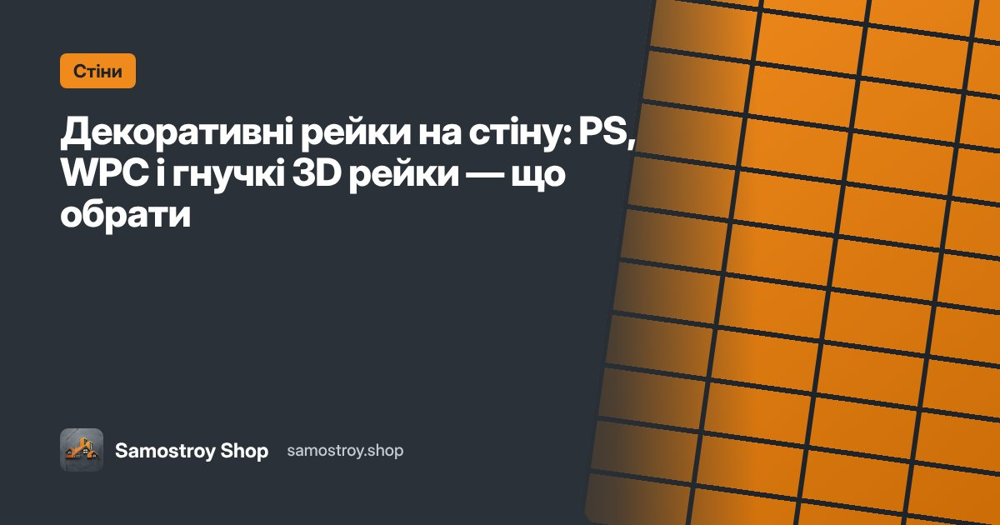
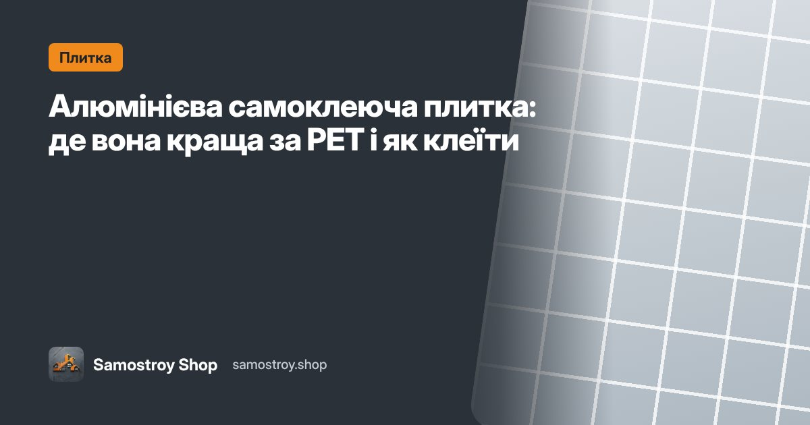

Блог: ремонт своїми руками
Короткі практичні інструкції: як обрати матеріал, підготувати поверхню, поклеїти без майстра й не помилитися з кількістю. А ще — як заробляти на продажу товарів для ремонту.
Не знайшли відповідь? Напишіть менеджеру — підкажемо.
Бізнес і співпраця · 6 хв
Власний інтернет-магазин без вкладень: як працює вітрина партнера Samostroy
Свій магазин з назвою, логотипом і цінами за 10 хвилин — без сайту, складу й програміста. Як працює вітрина партнера, чим вона краща за «ціну в директ» і скільки можна заробити.Бізнес і співпраця · 6 хвЯк придумати назву магазину й зробити логотип у ChatGPT чи Gemini: промпти й приклади
Назва, адреса й логотип для невеликого онлайн-магазину без дизайнера: 5 перевірок назви, 6 способів її придумати, готові промпти для ChatGPT і Gemini та типові помилки.Бізнес і співпраця · 5 хвПродаючі тексти для свого інтернет-магазину: слоган, «Про нас», доставка й оплата
Як написати тексти для вітрини, які продають: формула «властивість — перевага — вигода», 6 формул слогану, шаблони «Про нас», чесні тексти про доставку й оплату та перевірка текстів від ШІ.Бізнес і співпраця · 5 хвЯк просувати свою вітрину: де розмістити посилання й отримати перші 10 замовлень
Куди ставити посилання на власний інтернет-магазин, які пости приводять покупців і план на 7 днів, щоб отримати перші замовлення з вітрини партнера Samostroy без бюджету на рекламу.Стіни · 3 хвЯк захистити стіни від дітей і домашніх тварин: матеріали, що легко мити
Малюнки фломастерами, сліди лап, подряпини від кота й удари колясок: які стінові матеріали витримують, як оформити нижню частину стін і що робити, якщо вже пошкоджено.Стіни · 3 хвХолодна стіна в квартирі: чому так буває і що реально допоможе
Чому стіна холодна, мокріє й з’являється цвіль: місток холоду, вентиляція, вологість. Що робити спершу і коли 3D та м’які панелі допоможуть, а коли зашкодять.Стіни · 3 хвЯк поєднати колір стін, меблів і підлоги: правило 60-30-10 і готові схеми
Просте правило 60-30-10, теплі й холодні відтінки, поєднання фактур дерева, каменю й мармуру. Готові кольорові схеми для кухні, спальні, вітальні й коридору.Стіни · 3 хвДогляд, ремонт і демонтаж: як мити, замінити й зняти самоклеючі панелі
Як доглядати за 3D і ПВХ панелями, що робити з плямою чи подряпиною, як замінити одну панель і як зняти панелі зі стіни без пошкоджень — покрокові інструкції.Покупцям · 2 хвЯк оглянути посилку на відділенні перед оплатою: чек-лист покупця
Що перевірити, коли отримуєте самоклеючі матеріали з оплатою при отриманні: упаковка, кількість, колір, артикул, пошкодження. Що робити, якщо щось не так.Покупцям · 3 хвЯк вибрати й замовити матеріал без помилок: покрокова інструкція
Як підібрати матеріал, порахувати кількість, отримати безкоштовну консультацію й оформити замовлення в кошику або в 1 клік. Що підготувати, щоб менеджер швидко допоміг.Покупцям · 2 хвЧому колір на фото відрізняється від реального і як не помилитися з відтінком
Чому на екрані панель чи плівка виглядає інакше, ніж удома: налаштування екрана, освітлення, партія, фактура. Як обрати відтінок і перевірити його до поклейки.Покупцям · 2 хвЯк зберігати самоклеючі матеріали до поклейки і чому не можна клеїти одразу з морозу
Як правильно зберігати 3D панелі, плитку, плівку й шпалери до поклейки, скільки часу дати матеріалу «зігрітися» взимку і чому температура впливає на клейовий шар.Стіни · 3 хв3D панелі чи шпалери: що краще для стін у квартирі
Порівнюємо самоклеючі 3D панелі й шпалери: ціна за м², підготовка стін, нерівності, догляд, вологість, термін служби. Що обрати для коридору, спальні, кухні й дитячої.Плитка · 3 хвPET плитка чи кахель на кухонний фартух: чесне порівняння
Кахель, самоклеюча PET плитка, алюмінієва плитка й мозаїка на фартух: міцність, жир і температура біля плити, монтаж, ціна й термін служби. Що обрати для вашої кухні.Плівка й шпалери · 3 хвПлівка чи фарбування кухонних фасадів: що краще для оновлення кухні
Порівнюємо самоклеючу плівку й фарбування фасадів: підготовка, запах, час, вигляд, міцність і ціна. Коли достатньо плівки, а коли краще фарбувати чи міняти фасади.Підлога · 3 хвВінілова плитка чи лінолеум: що покласти на підлогу кухні, коридору й ванної
Порівняння самоклеючої вінілової плитки й лінолеуму: укладання, стики, міцність, волога, ремонт пошкоджень, вигляд і ціна. Що краще для різних кімнат.Стіни · 3 хвЯк сховати тріщини й нерівності на стіні без штукатурки
Які тріщини можна просто закрити, а які небезпечні. Як підготувати стіну й чим сховати дефекти: 3D панелі, гнучка штукатурка, ПВХ панелі, рейки. Покроково.Стіни · 2 хвСтіна за телевізором: 10 ідей оформлення своїми руками
Як оформити стіну за телевізором без майстра: рейки, 3D панелі, м’які панелі, мармур, підсвітка. Як сховати дроти, закріпити кронштейн і не зіпсувати оздоблення.Ремонт своїми руками · 2 хвМаленька кухня: як візуально збільшити простір без перепланування
12 прийомів для маленької кухні в хрущовці чи студії: світлі фасади, глянець і дзеркала, фартух у тон стін, підлога по діагоналі, світло й зберігання. Своїми руками.Плитка · 3 хвСкільки коштує оновити кухонний фартух своїми руками: розрахунок на 2026 рік
Розрахунок вартості фартуха 3 м × 60 см із самоклеючих матеріалів: PET плитка листами й у рулоні, алюмінієва плитка, скляна мозаїка. Скільки брати з запасом.Стіни · 3 хв20 ідей акцентної стіни своїми руками: для спальні, вітальні, кухні й коридору
Ідеї акцентної стіни без майстра: цегла, рейки, мармур, м’які панелі, штукатурка, дзеркала, молдинги, шахівниця. Що обрати для кожної кімнати й як не перестаратися.Бізнес і співпраця · 3 хв«Дорого», «подумаю», «а якщо не підійде»: як відповідати на заперечення покупців
Готові відповіді на 9 частих заперечень у продажу товарів для ремонту: дорого, подумаю, є дешевше, порадитися, не довіряю. Скрипти для чату й телефону.Бізнес і співпраця · 3 хвДопродаж без нав’язування: як збільшити середній чек на товарах для ремонту
Як пропонувати плінтуси, молдинги, запас і супутні товари так, щоб покупець дякував. Правила допродажу, готові фрази й приклад розрахунку середнього чека.Бізнес і співпраця · 3 хвВідмови від посилок з накладеним платежем: як зменшити повернення в дропшипінгу
Чому покупці не забирають посилки з оплатою при отриманні і як це виправити: підтвердження замовлення, нагадування, точні фото й розміри, часткова передоплата.Бізнес і співпраця · 3 хвПовторні продажі й відгуки: як перетворити одного покупця на кілька замовлень
Схема спілкування після покупки: інструкція в день отримання, питання про результат, прохання про відгук і фото, наступна кімната. Готові повідомлення для покупців.Бізнес і співпраця · 3 хв15 лайфхаків продажів у Viber, Telegram і Direct для товарів для ремонту
Практичні прийоми, які збільшують кількість замовлень із чатів: швидкість відповіді, питання замість цін, фото в інтер’єрі, розрахунок, вибір без вибору й інше.Ремонт своїми руками · 3 хвІнструменти для ремонту своїми руками: мінімальний набір для самоклеючих матеріалів
Що потрібно, щоб поклеїти панелі, плитку, плівку й шпалери без майстра: ніж, рулетка, рівень, ракель, фен, знежирювач. Список на 500–800 грн і поради з вибору.Ремонт своїми руками · 3 хвРемонт передпокою за один день: стіни, підлога, дзеркало й зберігання без майстра
План оновлення передпокою за день самоклеючими матеріалами: які панелі витримують куртки й сумки, підлога, що не боїться бруду, дзеркало, килимок і зберігання.Ремонт своїми руками · 3 хвРемонт балкона своїми руками без мокрих робіт: підлога, стіни й зона відпочинку
Як оновити балкон чи лоджію за вихідні: що обрати для теплого й холодного балкона, композитна плитка на підлогу, ПВХ панелі, сонцезахисна плівка й меблі.Ремонт своїми руками · 3 хвЯк підготувати квартиру до продажу чи здачі в оренду: косметичний ремонт за 1–3 дні
Хоумстейджинг своїми руками: що оновити в кухні, ванній і коридорі самоклеючими матеріалами, щоб квартира швидше знайшла покупця чи орендаря і краще виглядала на фото.Ремонт своїми руками · 3 хвЗвукоізоляція чи звукопоглинання: що реально допоможе від шуму в квартирі
Чим звукоізоляція відрізняється від звукопоглинання, який шум можна прибрати самому, а який — лише ремонтом. Чесний розбір матеріалів і план дій для квартири.Стіни · 4 хвЗвукоізоляційні панелі з войлоку: як обрати, розрахувати й поклеїти
Самоклеючі акустичні панелі з поліефірного войлоку 300×300 і 600×600 мм: де працюють, скільки потрібно на кімнату, як розмістити й поклеїти. Розрахунок і схеми.Ремонт своїми руками · 3 хвЯк зменшити шум у кімнаті без капітального ремонту: 12 перевірених способів
Прості способи зробити квартиру тихішою: двері, вікна, розетки, текстиль, звукопоглинальні панелі, м’яка підлога й меблі. Що дає найбільший ефект за найменші гроші.Підлога · 3 хвШум кроків і падіння іграшок: як зробити підлогу тихішою без стяжки
Як зменшити ударний шум від кроків, стільців і дитячих ігор: плитка під ковролін, підлога-пазл, килими й накладки. Що допоможе вам і сусідам знизу.Стіни · 2 хвСамоклеючі 3D панелі для стін: як вибрати товщину, розмір і фактуру
Чим відрізняються самоклеючі 3D панелі 3, 5 і 7 мм, які розміри бувають, яку фактуру обрати для кухні, коридору чи дитячої — і як не помилитися з покупкою.Стіни · 2 хвЯк поклеїти 3D панелі своїми руками: покрокова інструкція
Покрокова інструкція з монтажу самоклеючих 3D панелей: підготовка стіни, розмітка, обрізка біля розеток і кутів, типові помилки й догляд після поклейки.Стіни · 2 хвСкільки 3D панелей потрібно на стіну: простий розрахунок із запасом
Як порахувати кількість самоклеючих 3D панелей 700×700 і 700×770 мм на стіну: формула, приклад, запас на підрізку й поради, щоб не докуповувати.
Стіни · 2 хв3D панелі на кухні та у ванній: де можна клеїти, а де краще інший матеріал
Чи можна клеїти самоклеючі 3D панелі на кухні й у ванній: які зони підходять, де потрібна PET чи алюмінієва плитка і як доглядати за панелями у вологих приміщеннях.Стіни · 2 хв3D панелі на стелю: як клеїти, щоб не відпали
Як поклеїти самоклеючі 3D панелі на стелю: які панелі обрати, як підготувати поверхню й закріпити краї, щоб нічого не відійшло.Стіни · 2 хвПанелі під цеглу для коридору й балкона: лофт без пилу й будівельних робіт
Самоклеючі панелі під цеглу: як обрати колір і розмір, як укласти «кладку» з правильним зсувом рядів і де цегляна стіна виглядає найкраще.Стіни · 2 хвПВХ панелі й плити для стін: чим відрізняються від 3D панелей і де їх обрати
Декоративні ПВХ панелі 960×480 мм і плити 1220×2440 мм: переваги, де використовувати, як кріпити й чим вони кращі або гірші за м’які 3D панелі.
Стіни · 2 хвДекоративні рейки на стіну: PS, WPC і гнучкі 3D рейки — що обрати
Рейки на стіну для зонування й акцентної стіни: чим відрізняються рейки PS, WPC і вінілові 3D рейки в рулоні, як кріпити й скільки потрібно.Стіни · 2 хвМ’які стінові панелі під шкіру й велюр: узголів’я ліжка без столяра
Самоклеючі м’які панелі під шкіру й велюр: як зробити узголів’я ліжка чи акцентну стіну, як обрати колір, як клеїти й доглядати.Стіни · 2 хвСамоклеюча гнучка штукатурка: що це і де її використати
Гнучка самоклеюча штукатурка 600×600 мм і в рулоні: як виглядає, чим відрізняється від 3D панелей, де клеїти й як доглядати.Плитка · 2 хвPET плитка на кухонний фартух: як поклеїти за вечір
Самоклеюча PET плитка для кухонного фартуха: переваги, розрахунок, поклейка навколо розеток і правила біля плити. Покрокова інструкція.Плитка · 2 хвСамоклеюча PET плитка у ванній: чи витримає воду й пару
Чи можна використовувати самоклеючу PET плитку у ванній кімнаті й душі: які зони підходять, як підготувати стіни й захистити стики від води.
Плитка · 2 хвАлюмінієва самоклеюча плитка: де вона краща за PET і як клеїти
Самоклеюча алюмінієва плитка 300×300 мм для кухонного фартуха й акцентних стін: переваги, обмеження, монтаж і догляд.Плитка · 2 хвСамоклеюча мозаїка: скло, PET і дзеркальна — як обрати
Яку самоклеючу мозаїку обрати для кухні, ванної чи декору: скляна, PET і дзеркальна мозаїка, їхні переваги, обмеження й правила поклейки.Підлога · 2 хвСамоклеюча вінілова плитка для підлоги: як вибрати товщину й формат
Як обрати самоклеючу вінілову плитку (СВП) для підлоги: формати 600×300 і 914×152 мм, товщина, фактура, де класти й скільки купувати.Підлога · 2 хвЯк покласти самоклеючу вінілову плитку на стару підлогу: інструкція
Покрокове укладання самоклеючої вінілової плитки: підготовка основи, розмітка від центру, різання, примикання до стін і дверей, плінтус.Підлога · 2 хвLVT плитка чи ламінат: що краще для кухні й коридору
Порівняння LVT плитки й ламінату: стійкість до води, зносостійкість, шум, укладання своїми руками та де який матеріал доречніший.Підлога · 2 хвПлитка під ковролін: м’яка підлога модулями для офісу й дитячої
Самоклеюча плитка під ковролін 300×300, 500×500 і 600×600 мм: де використовувати, як укласти й чому її зручно замінювати частинами.Підлога · 2 хвКомпозитна плитка ДПК для балкона й тераси: укладання без інструментів
Модульна композитна плитка ДПК (WPC) для балкона, тераси й саду: переваги, укладання на замках, догляд і на що звернути увагу.Підлога · 2 хвВінілове покриття на стару плитку: коли можна і як підготувати основу
Чи можна класти самоклеєний вініл на стару кахельну плитку: перевірка основи, вирівнювання швів, ґрунтовка й поради, щоб шви не проступали.Підлога · 2 хвСамоклеюче вінілове покриття в рулоні: швидке оновлення підлоги
Підлогове вінілове покриття в рулоні: переваги перед плиткою, як розкроїти й укласти, де використовувати й як доглядати.Підлога · 2 хвПідлога-пазл EVA для дитячої: як обрати товщину й розмір
М’яка підлога-пазл з EVA та плюшеві пазли: товщина, розмір елементів, безпека, догляд і скільки потрібно на ігрову зону.Підлога · 2 хвДитячий складний термокилимок: на що дивитися перед покупкою
Як обрати дитячий складний термокилимок: розмір, товщина, двосторонній малюнок, безпека й догляд. Для дому, прогулянок і пікніка.Декор і дзеркала · 2 хвСамоклеючі плінтуси й молдинги: як закрити стики без цвяхів
Гнучкі самоклеючі плінтуси, молдинги й профілі: де потрібні, як вибрати колір і ширину, як клеїти по кутах і нерівних стінах.Дім і меблі · 2 хвВологопоглинаючі килимки для ванної й передпокою: як вибрати й доглядати
Як обрати вологопоглинаючий килимок для ванної, кухні чи передпокою: розмір, основа проти ковзання, швидкість висихання й догляд.Плівка й шпалери · 2 хвЯк вибрати самоклеючу плівку для меблів: товщина, фактура, ширина рулону
Як обрати самоклеючу плівку для шаф, фасадів, дверей і підвіконь: глянець чи мат, «під дерево» чи однотон, ширина рулону 45, 60, 67 і 90 см.Плівка й шпалери · 2 хвЯк обклеїти кухонні фасади самоклеючою плівкою: інструкція без майстра
Покрокова поклейка самоклеючої плівки на кухонні фасади: зняття дверцят, знежирення, розкрій, загин на торці, пухирі й типові помилки.Плівка й шпалери · 2 хвСамоклеюча плівка на двері: як оновити міжкімнатні двері за вечір
Як обклеїти міжкімнатні двері самоклеючою плівкою: підготовка, вибір ширини рулону, поклейка полотна, обрізка навколо ручки й наличників.Плівка й шпалери · 2 хвПлівка на стільницю й підвіконня: чи варто клеїти і скільки прослужить
Чи можна клеїти самоклеючу плівку на кухонну стільницю й підвіконня: обмеження, підготовка, захист швів і поради для довшого терміну служби.Плівка й шпалери · 2 хвПухирі під самоклеючою плівкою: чому з’являються і як прибрати
Чому під самоклеючою плівкою з’являються пухирі й хвилі та як їх прибрати без переклейки: голка, фен, шпатель. І як уникнути пухирів наступного разу.Плівка й шпалери · 2 хвДзеркальна сонцезахисна плівка на вікна: як працює і як наклеїти
Сонцезахисна дзеркальна плівка для вікон: як вона зменшує нагрів і сліпуче сонце, що видно ззовні й зсередини, як наклеїти без пухирів.Плівка й шпалери · 2 хвСамоклеючі шпалери: плюси, мінуси і скільки рулонів потрібно
Що таке самоклеючі шпалери, де вони доречні, як рахувати кількість (рулон 2800×500 мм — 1,4 м²) і як клеїти рівно без клею.Плівка й шпалери · 2 хвМ’які самоклеючі шпалери для дитячої: тепло, тихо й безпечно
Чому м’які самоклеючі шпалери добре підходять для дитячої кімнати: захист від холодної стіни й ударів, легке миття, безпечний монтаж.Декор і дзеркала · 2 хвАкрилові самоклеючі дзеркала: плюси, обмеження і як клеїти
Акрилове дзеркало замість скляного: де воно безпечніше, як клеїти, щоб не було викривлень, і як доглядати, щоб не подряпати.Декор і дзеркала · 2 хвДзеркальні наклейки й декор: як прикрасити стіну за 15 хвилин
Дзеркальні наклейки, фігури й набори: ідеї для вітальні, дитячої й передпокою, як скласти композицію й наклеїти рівно.Дім і меблі · 2 хвСамоклеюча екошкіра: як відновити диван, крісло чи стілець
Як закрити потертості, тріщини й дірки на дивані, кріслі чи стільці самоклеючою екошкірою: вибір кольору, розкрій, поклейка й догляд.Дім і меблі · 2 хвСамоклеюча екошкіра для салону авто: що можна обклеїти і як не помилитися
Самоклеюча екошкіра в автомобілі: сидіння, підлокітник, дверні карти, торпедо. Підготовка, температура, обрізка й догляд.Ремонт своїми руками · 2 хвПідготовка поверхні перед поклейкою: 5 кроків, від яких залежить результат
Як підготувати стіну, меблі чи підлогу перед поклейкою самоклеючих матеріалів: очищення, знежирення, ґрунтовка, температура й перевірка.Ремонт своїми руками · 2 хвРемонт орендованої квартири без шкоди: що можна змінити самоклеючими матеріалами
Як оновити орендовану квартиру без капітального ремонту: фасади, фартух, стіни, підлога й декор самоклеючими матеріалами — і як домовитися з власником.Ремонт своїми руками · 2 хвБюджетний ремонт кухні без майстра: фартух, фасади, стільниця й підлога
План бюджетного оновлення кухні своїми руками: PET плитка на фартух, плівка на фасади, захист стільниці, вінілова підлога. Порядок робіт і розрахунок.Ремонт своїми руками · 2 хвОновлення ванної без укладання плитки: що реально працює
Як швидко оновити ванну кімнату без укладання плитки: PET плитка й ПВХ плити на стіни, мозаїка, акрилове дзеркало, килимки. Що працює, а що ні.Ремонт своїми руками · 2 хвРемонт однієї кімнати за вихідні: план на два дні
Покроковий план оновлення кімнати за два дні самоклеючими матеріалами: замір і покупка, підготовка, стіни, підлога, плінтус і декор.Ремонт своїми руками · 2 хвЯк розрахувати матеріал із запасом: формула для панелей, плитки, плівки й шпалер
Універсальна формула розрахунку самоклеючих матеріалів: площа, вирахування вікон і дверей, площа одного елемента, запас 5–15%. Приклади для різних матеріалів.Бізнес і співпраця · 2 хвДропшипінг в Україні: як почати продавати без вкладень
Що таке дропшипінг, як він працює в Україні, що потрібно для старту, де шукати покупців і як заробляти на різниці між оптовою й роздрібною ціною.Бізнес і співпраця · 2 хвДропшипінг товарів для ремонту: чому ця ніша добре продається онлайн
Чому самоклеючі матеріали для ремонту — вдячна ніша для дропшипінгу: попит, візуальність «до/після», допродажі й повторні покупки.Бізнес і співпраця · 2 хвСкільки можна заробити на дропшипінгу: чесний розрахунок без обіцянок
Як порахувати дохід у дропшипінгу: маржа, середній чек, кількість замовлень, витрати на рекламу й комісії. Приклад розрахунку й від чого залежить результат.Бізнес і співпраця · 2 хвЯк продавати на OLX без складу: оголошення, які отримують заявки
Як оформити профіль і оголошення на OLX для продажу товарів для ремонту без власного складу: заголовок, фото, ціна, опис, відповіді й регулярність.Бізнес і співпраця · 2 хвЯк продавати товари для ремонту на Prom: старт для новачка
Як запустити магазин на Prom.ua для продажу самоклеючих матеріалів: тариф, оформлення, картки товарів, характеристики, ціна з комісією й відгуки.Бізнес і співпраця · 2 хвЯк вибрати постачальника для дропшипінгу: 8 питань перед стартом
Що перевірити в постачальника для дропшипінгу: наявність, швидкість відправки, повернення, ціни, контент, оплата, підтримка й умови виплат.Бізнес і співпраця · 2 хвСамоклеючі матеріали оптом: умови для магазинів, майстрів і бригад
Як закуповувати самоклеючі 3D панелі, плитку, плівку й інші матеріали для ремонту оптом: формати співпраці, склади, документи, зразки й прайс.Бізнес і співпраця · 2 хвЯк стати постачальником інтернет-магазину: що підготувати виробнику
Що підготувати виробнику чи оптовому складу, щоб продавати через інтернет-магазини й маркетплейси: фід, фото, характеристики, документи, логістика.Бізнес і співпраця · 2 хвФраншиза чи власний інтернет-магазин: що обрати для старту в ніші ремонту
Порівняння: власний інтернет-магазин з нуля, дропшипінг і франшиза / white label у ніші матеріалів для ремонту. Вкладення, ризики, швидкість старту.Бізнес і співпраця · 2 хвВідео для продажу товарів для ремонту: формати для TikTok і Reels
Які короткі відео продають самоклеючі матеріали: «до/після», процес монтажу, розвінчування міфів, ідеї з бюджетом. Сценарії й поради зі зйомки.Покупцям · 2 хвДоставка й оплата в Samostroy Shop: як замовити й отримати товар
Як замовити в Samostroy Shop: кошик чи покупка в 1 клік, доставка Новою Поштою й Укрпоштою, відправка в день замовлення, оплата при отриманні з оглядом.Покупцям · 2 хвОбмін і повернення самоклеючих матеріалів: що можна повернути, а що ні
Чому розпаковані й наклеєні самоклеючі матеріали не підлягають поверненню, коли ми замінюємо товар за свій рахунок і як не помилитися з вибором, щоб нічого не повертати.Нічого не знайдено. Спробуйте інше слово.